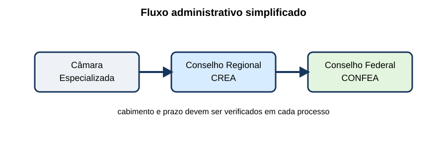
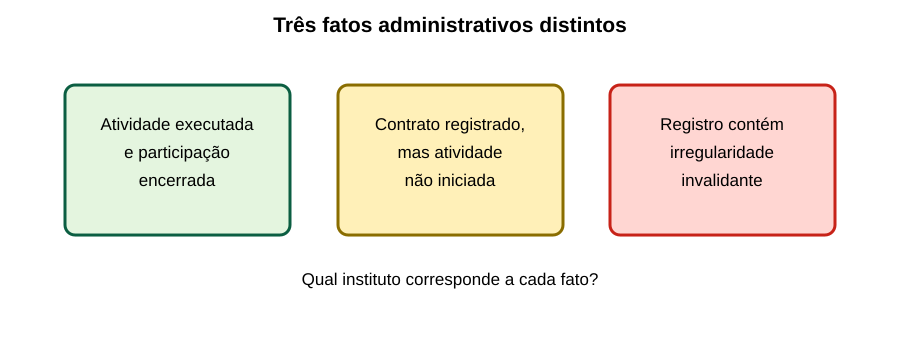
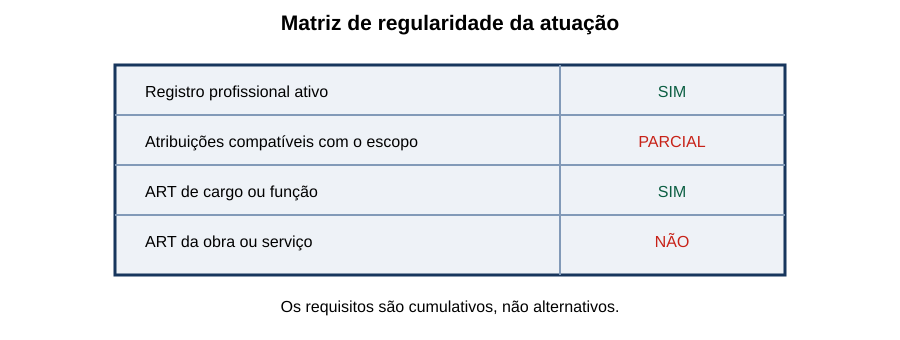

Legislação Profissional & CONFEA/ART
25 questões autorais calibradas pelo padrão IDECAN • Bloco Prata
| Questão 01 | Lei nº 5.194/1966 • Exercício Profissional |
Um engenheiro diplomado no Brasil foi contratado para elaborar projeto elétrico, mas ainda não registrou o diploma no conselho competente. Para os efeitos da Lei nº 5.194/1966, ele:
A) pode exercer plenamente a profissão durante o primeiro ano após a colação de grau.
B) pode assinar projetos privados, ficando impedido apenas de atuar para a Administração Pública.
C) necessita do diploma devidamente registrado e do registro profissional para o exercício regular.
D) pode substituir o registro pela emissão isolada de ART referente ao primeiro contrato.
Gabarito Comentado: Alternativa C
A formação acadêmica não completa, sozinha, a habilitação legal. A Lei nº 5.194/1966 assegura o exercício aos diplomados cujo diploma esteja devidamente registrado, observadas as demais exigências legais e o registro no conselho. A ART não regulariza ausência de habilitação.
Análise das armadilhas:Confundir conclusão do curso, título acadêmico, registro profissional e ART, que são institutos distintos.Como pensar nesta questão:Verifique a sequência: formação reconhecida, registro/habilitação e, para cada vínculo ou atividade sujeita, a ART correspondente.
| Questão 02 | Sistema Confea/Crea • Competências |
Uma decisão de Câmara Especializada do Crea impõe penalidade e o interessado pretende recorrer. O diagrama resume as instâncias administrativas.

Segundo a Lei nº 5.194/1966, a sequência coerente é:A) Câmara Especializada → Conselho Regional → Conselho Federal, observadas as regras recursais.
B) Câmara Especializada → prefeitura → Conselho Federal, porque o município controla o exercício profissional.
C) Crea → sindicato profissional → Poder Executivo federal, em revisão obrigatória.
D) Câmara Especializada → Confea, sem possibilidade de apreciação pelo plenário regional.
Gabarito Comentado: Alternativa A
As Câmaras Especializadas julgam matérias de sua especialização; o Conselho Regional aprecia recursos no âmbito regional, e o Confea atua como instância superior nos assuntos previstos em lei. O diagrama não elimina a necessidade de observar prazo e cabimento.
Análise das armadilhas:Trocar conselho profissional por sindicato ou órgão licenciador, que possuem funções diferentes.Como pensar nesta questão:Identifique quem decidiu originalmente e procure a próxima instância dentro do próprio Sistema Confea/Crea.
| Questão 03 | Lei nº 5.194/1966 • Autoria de Projeto |
O autor de um projeto elétrico recusou-se, após solicitação comprovada, a elaborar alteração necessária. A obra precisa prosseguir. A solução legalmente adequada é:
A) qualquer desenhista alterar o projeto, mantendo a assinatura do autor original.
B) o contratante modificar o documento e atribuir a responsabilidade ao executor da obra.
C) o Crea alterar diretamente o projeto, pois detém competência fiscalizatória.
D) outro profissional habilitado realizar a modificação e assumir a responsabilidade pelo projeto modificado.
Gabarito Comentado: Alternativa D
Em regra, alterações cabem ao autor. Se ele estiver impedido ou recusar colaboração após solicitação comprovada, outro profissional habilitado pode modificar o projeto, assumindo a responsabilidade pela parte modificada. Não se conserva assinatura alheia como cobertura.
Análise das armadilhas:Interpretar direito autoral como impedimento absoluto ou imaginar que responsabilidade pode permanecer com quem não fez a alteração.Como pensar nesta questão:Procure três elementos: solicitação comprovada, habilitação de quem altera e assunção explícita da nova responsabilidade.
| Questão 04 | Lei nº 6.496/1977 • Obrigatoriedade da ART |
Uma manutenção especializada foi contratada verbalmente por uma empresa pública. O responsável afirma que a ART só é exigida para contrato escrito. Essa afirmação é:
A) correta, porque contrato verbal não produz responsabilidade técnica registrável.
B) incorreta, pois contratos escritos ou verbais relativos a obras e serviços abrangidos sujeitam-se ao registro da ART.
C) correta apenas quando o valor do serviço fica abaixo da taxa anual do Crea.
D) incorreta somente se houver fornecimento de material incorporado à obra.
Gabarito Comentado: Alternativa B
A legislação e a Resolução nº 1.137/2023 abrangem contrato escrito ou verbal para execução de obra ou prestação de serviço das profissões do Sistema. A forma verbal não elimina a responsabilidade nem a obrigação de anotação.
Análise das armadilhas:Usar a forma do contrato ou o valor econômico como se definissem a natureza técnica da atividade.Como pensar nesta questão:Pergunte se existe obra, serviço, cargo ou função técnica abrangida — não se o ajuste foi impresso em papel.
| Questão 05 | ART • Momento do Registro |
O profissional iniciou uma inspeção técnica e cadastrou a ART no sistema, mas deixou o pagamento para depois da entrega. Conforme a regulamentação vigente:
A) o cadastro provisório já efetiva o registro e autoriza o início de qualquer atividade.
B) o pagamento pode ser substituído pela assinatura do contratante no relatório final.
C) o registro efetiva-se após cadastro e recolhimento; iniciar sem recolhimento pode ensejar sanções.
D) a ART só se torna exigível quando houver emissão de nota fiscal.
Gabarito Comentado: Alternativa C
A Resolução nº 1.137/2023 estabelece que o registro se efetiva após cadastro e recolhimento do valor correspondente. O início sem esse recolhimento sujeita às consequências legais. Nota fiscal ou assinatura do relatório não substituem o registro.
Análise das armadilhas:Confundir preenchimento do formulário com ART registrada ou vincular a exigência ao faturamento.Como pensar nesta questão:Separe cadastro, recolhimento e efetivação. A atividade deve começar com a responsabilidade formalizada.
| Questão 06 | ART • Alteração Contratual |
Durante a execução, um aditivo amplia o objeto, o valor e o prazo, mantendo o mesmo profissional e a mesma caracterização básica da atividade. No texto compilado da Resolução nº 1.137/2023, a medida adequada é:
A) baixar a ART original como concluída e omitir o aditivo no acervo.
B) emitir CAT antes de registrar qualquer mudança contratual.
C) registrar ART de cargo ou função para substituir a ART de obra ou serviço.
D) registrar ART complementar vinculada à inicial, refletindo a ampliação contratual.
Gabarito Comentado: Alternativa D
A ART complementar, vinculada à inicial e do mesmo profissional, é usada quando alteração contratual amplia objeto, valor, atividade contratada ou prazo, conforme a redação vigente. A baixa não deve apagar uma atividade ainda em curso.
Análise das armadilhas:Aplicar a antiga classificação sem conferir o texto compilado ou confundir complemento com correção de erro.Como pensar nesta questão:Pergunte se houve ampliação/detalhamento ou correção. Ampliação conduz à complementar; correção da caracterização conduz à substituição.
| Questão 07 | ART • Correção de Dados |
Após o pagamento da ART, o profissional percebe que descreveu incorretamente a atividade, alterando a caracterização do objeto. Mantidos profissional e contrato, deve utilizar:
A) ART de substituição vinculada à inicial, com a correção dos dados.
B) ART múltipla, pois todo erro transforma o serviço em atividade de rotina.
C) baixa por conclusão seguida de nova ART sem qualquer vínculo.
D) CAT parcial, que substitui os dados técnicos da ART registrada.
Gabarito Comentado: Alternativa A
A ART de substituição corrige erro de preenchimento ou dados que impliquem modificação da caracterização do objeto ou atividade, permanecendo vinculada à inicial. CAT certifica acervo; não corrige ART.
Análise das armadilhas:Escolher complementar para qualquer mudança ou tratar CAT como formulário de retificação.Como pensar nesta questão:Classifique o fato: correção de registro existente, ampliação contratual, participação técnica ou encerramento.
| Questão 08 | Participação Técnica • Coautoria e Corresponsabilidade |
Dois engenheiros de mesma competência elaboram conjuntamente um único projeto; outros dois executam conjuntamente a instalação decorrente de outro contrato. As participações são, respectivamente:
A) equipe e individual.
B) vinculação e substituição.
C) coautoria e corresponsabilidade.
D) corresponsabilidade e coautoria.
Gabarito Comentado: Alternativa C
Na Resolução nº 1.137/2023, coautoria se refere à atividade técnica intelectual desenvolvida conjuntamente por profissionais de mesma competência; corresponsabilidade, à atividade executiva conjunta nas mesmas condições.
Análise das armadilhas:Associar “responsabilidade” apenas ao projeto ou inverter intelectual e executiva.Como pensar nesta questão:Marque a natureza da atividade: criação intelectual → coautoria; execução conjunta → corresponsabilidade.
| Questão 09 | ART de Cargo ou Função • Alcance |
Uma engenheira integra o quadro técnico de empresa e possui ART de cargo ou função. A empresa recebe contrato específico para executar subestação. A ART de cargo ou função:
A) dispensa todas as ARTs de obra enquanto durar o vínculo empregatício.
B) não exime o registro da ART específica ou múltipla da obra ou serviço executado.
C) serve como CAT automática para qualquer atividade da pessoa jurídica.
D) transfere a responsabilidade técnica integralmente à direção administrativa.
Gabarito Comentado: Alternativa B
A ART do vínculo documenta cargo ou função técnica. A Resolução nº 1.137/2023 expressamente informa que ela não substitui ART de execução de obra ou prestação de serviço, específica ou múltipla.
Análise das armadilhas:Confundir responsabilidade pela função na empresa com anotação dos contratos técnicos realizados.Como pensar nesta questão:Pergunte qual relação cada ART documenta: vínculo permanente ou atividade/contrato determinado.
| Questão 10 | ART • Circunscrição |
Profissional registrado no Crea de origem executará serviço sujeito à ART em outro estado. Quanto ao local de registro da ART, deve-se considerar:
A) o município do domicílio do contratante, independentemente do local da obra.
B) somente o Crea onde foi expedido o diploma, ainda que o serviço ocorra em outra região.
C) o Confea diretamente, porque atividades interestaduais dispensam participação dos Creas.
D) o Crea da circunscrição em que a atividade será exercida, além das exigências de registro ou visto aplicáveis.
Gabarito Comentado: Alternativa D
A ART é registrada no Crea em cuja circunscrição a atividade é exercida. Atuação fora da região de origem também exige observar as regras de registro ou visto, sem transferir a anotação diretamente ao Confea.
Análise das armadilhas:Escolher domicílio do profissional, do cliente ou local de emissão do diploma em vez do local da atividade.Como pensar nesta questão:Localize fisicamente a obra ou serviço e identifique o Crea competente naquela circunscrição.
| Questão 11 | CAT • Natureza do Documento |
Em licitação, uma empresa apresenta apenas uma CAT emitida em nome do engenheiro e afirma que ela prova, por si só, o acervo operacional da pessoa jurídica. A afirmação é:
A) incorreta: CAT certifica acervo técnico-profissional; a comprovação operacional da pessoa jurídica possui disciplina própria.
B) correta se o profissional for sócio, ainda que a atividade tenha sido executada em outra organização.
C) correta, porque todo acervo profissional pertence automaticamente à empresa atual.
D) incorreta apenas quando a CAT foi emitida em estado diferente do certame.
Gabarito Comentado: Alternativa A
A CAT é emitida em nome do profissional e certifica atividades consignadas em seu acervo técnico-profissional. A Resolução nº 1.137/2023 também disciplina acervo operacional e CAO, que não se confundem com a experiência pessoal do engenheiro.
Análise das armadilhas:Transferir automaticamente o acervo individual entre empresas ou confundir CAT e CAO pela semelhança das siglas.Como pensar nesta questão:Primeiro identifique o titular da experiência que se quer provar: pessoa física ou pessoa jurídica.
| Questão 12 | Acervo Técnico • Atividade em Andamento |
O profissional pede CAT incluindo etapa concluída de obra ainda em andamento. Segundo a regulamentação, o pedido:
A) é sempre proibido até a baixa integral da ART.
B) pode ser instruído com atestado que caracterize período, participação e atividades ou etapas efetivamente finalizadas.
C) dispensa análise do Crea se houver assinatura digital do contratante.
D) exige anulação da ART original e emissão de ART exclusiva para a etapa.
Gabarito Comentado: Alternativa B
A regra admite requerimento envolvendo obra ou serviço em andamento quando acompanhado de atestado que comprove efetiva participação e caracterize período e etapas concluídas, sujeito à análise do Crea.
Análise das armadilhas:Achar que “em andamento” impede qualquer certificação ou que o atestado elimina a análise administrativa.Como pensar nesta questão:Separe o contrato total da parcela comprovadamente executada e documentada.
| Questão 13 | Atestado e CAT • Responsabilidade pelas Informações |
Um contratante emite atestado com quantitativo maior que o executado, e o profissional tenta vinculá-lo à CAT. A regulamentação atribui a veracidade e exatidão do atestado:
A) ao Confea, a partir do simples protocolo do documento.
B) exclusivamente ao profissional beneficiário, porque é titular da CAT.
C) ao seu emitente, sem afastar a verificação e as providências do Crea.
D) à comissão de licitação que futuramente receber o atestado.
Gabarito Comentado: Alternativa C
A Resolução nº 1.137/2023 atribui ao emitente a responsabilidade pela veracidade e exatidão do atestado. Isso não impede análise, diligência e providências pelo Crea diante de inconsistência.
Análise das armadilhas:Concluir que responsabilidade do emitente obriga o conselho a registrar qualquer conteúdo.Como pensar nesta questão:Distinga quem declara o fato de quem verifica sua compatibilidade com os assentamentos profissionais.
| Questão 14 | Lei nº 5.194/1966 • Pessoa Jurídica |
Uma empresa anuncia serviços de engenharia, mas não possui registro no Crea nem profissional habilitado responsável. O contrato é assinado apenas pelo diretor comercial. A situação:
A) é regular se a empresa terceirizar posteriormente a assinatura dos projetos.
B) é regular para serviços privados, porque a fiscalização alcança apenas contratos públicos.
C) é irregular somente após ocorrer dano material ao contratante.
D) configura atuação sem os requisitos legais, pois a pessoa jurídica e a responsabilidade técnica devem atender à legislação profissional.
Gabarito Comentado: Alternativa D
Pessoas jurídicas organizadas para executar atividades abrangidas devem observar registro e responsabilidade técnica compatível. Assinatura comercial não substitui habilitação, registro e ART de quem efetivamente assume a atividade.
Análise das armadilhas:Condicionar a irregularidade à ocorrência de dano ou imaginar que setor privado não é fiscalizado.Como pensar nesta questão:Verifique empresa, quadro técnico, atribuições e anotação da atividade — quatro camadas diferentes.
| Questão 15 | Atribuições Profissionais • Limites |
Um engenheiro eletricista recebe proposta para assinar projeto cuja atividade principal não consta de suas atribuições profissionais. Mesmo possuindo registro ativo, ele deve:
A) recusar ou limitar sua atuação às atribuições que possui, buscando profissional habilitado para a parcela restante.
B) assinar, pois o título genérico de engenheiro autoriza qualquer modalidade.
C) emitir ART com descrição genérica para ampliar automaticamente suas atribuições.
D) solicitar ao contratante uma declaração assumindo a parcela fora de sua competência.
Gabarito Comentado: Alternativa A
Registro ativo não torna universais as atribuições. O profissional deve atuar nos limites de sua habilitação; ART registra responsabilidade por atividade que ele já está legalmente apto a exercer, não cria nova competência.
Análise das armadilhas:Tratar ART ou anuência do cliente como fonte de atribuição profissional.Como pensar nesta questão:Antes de aceitar, confronte atividade concreta, formação, registro e atribuições concedidas.
| Questão 16 | Código de Ética • Conflito de Interesses |
Servidor engenheiro participa da especificação de equipamento e, paralelamente, recebe oferta para representar comercialmente um dos fornecedores. A conduta compatível com a ética profissional é:
A) aceitar, desde que não revele aos demais integrantes da equipe o vínculo comercial.
B) declarar o conflito, afastar-se das decisões afetadas e cumprir as regras institucionais aplicáveis.
C) aceitar após a licitação, ainda que tenha influenciado critérios direcionadores durante o planejamento.
D) manter as duas funções e compensar o conflito solicitando três propostas comerciais.
Gabarito Comentado: Alternativa B
Interesse privado relacionado a decisão técnica pública ameaça independência, imparcialidade e confiança. Transparência exige declarar o conflito e adotar afastamento ou medidas institucionais adequadas, não apenas ocultá-lo ou colher mais preços.
Análise das armadilhas:Reduzir conflito de interesses a recebimento de vantagem após o resultado ou acreditar que sigilo resolve incompatibilidade.Como pensar nesta questão:Pergunte se o profissional ou pessoa ligada a ele ganha com uma decisão que deve avaliar imparcialmente.
| Questão 17 | Código de Ética • Segurança e Interesse Coletivo |
Durante comissionamento, a chefia exige energização apesar de ensaio de proteção inconclusivo. A ação eticamente adequada do responsável é:
A) apagar o resultado inconclusivo e repetir o ensaio após a entrega.
B) energizar e inserir ressalva no relatório somente se ocorrer falha.
C) obedecer à chefia, pois responsabilidade hierárquica substitui responsabilidade profissional.
D) registrar tecnicamente o risco, não certificar condição não comprovada e acionar os canais responsáveis.
Gabarito Comentado: Alternativa D
O compromisso profissional com segurança, qualidade e interesse coletivo impede certificar como segura uma condição não demonstrada. O responsável deve registrar fatos, comunicar e usar os fluxos competentes, sem falsear evidência.
Análise das armadilhas:Confundir subordinação administrativa com transferência total da responsabilidade técnica.Como pensar nesta questão:Localize o risco, a evidência ausente e aquilo que a assinatura profissional estaria afirmando.
| Questão 18 | Código de Ética • Autoria e Crédito |
Um coordenador retira do relatório os nomes dos engenheiros que elaboraram cálculos especializados e apresenta o trabalho como exclusivamente seu. Essa conduta:
A) é aceitável porque coordenação administrativa implica autoria de todas as partes.
B) é aceitável se os autores receberam salário durante a elaboração.
C) viola o dever de reconhecer autoria e responsabilidade pelas partes efetivamente desenvolvidas.
D) é problema apenas contratual, sem dimensão ética profissional.
Gabarito Comentado: Alternativa C
A legislação e a ética protegem autoria e exigem identificação de quem elaborou documentos e partes técnicas. Coordenação não apaga contribuições nem autoriza apropriação de crédito.
Análise das armadilhas:Confundir propriedade econômica do documento ou relação empregatícia com autoria técnica.Como pensar nesta questão:Pergunte quem concebeu, calculou e assumiu cada parte; crédito e responsabilidade devem acompanhar a contribuição.
| Questão 19 | Fiscalização Profissional • Crea e Contratante |
Uma prefeitura aprovou o alvará de uma obra. Em fiscalização posterior, o Crea encontra exercício profissional irregular. O alvará municipal:
A) impede qualquer atuação do Crea, pois licenciamento urbano prevalece sobre registro profissional.
B) não afasta a fiscalização do exercício profissional, pois as competências têm objetos distintos.
C) substitui ART e registro se o projeto tiver sido protocolado eletronicamente.
D) transforma automaticamente o autor do projeto em servidor municipal.
Gabarito Comentado: Alternativa B
Licenciamento urbanístico e fiscalização profissional analisam objetos diferentes. A aprovação municipal não comprova, por si, regularidade de registro, atribuições ou ART, nem exclui a competência legal do Crea.
Análise das armadilhas:Usar uma autorização administrativa como licença universal para todos os regimes jurídicos.Como pensar nesta questão:Separe o que cada órgão controla: uso/obra urbana, exercício profissional, segurança laboral, ambiente e outros.
| Questão 20 | Penalidades • Código de Ética |
Após processo regular, verifica-se infração ao Código de Ética. Entre as penalidades especificamente relacionadas pela Lei nº 5.194/1966 ao descumprimento ético, estão:
A) advertência reservada e censura pública, consideradas gravidade e reincidência.
B) prisão administrativa e perda automática do diploma.
C) cassação da cidadania profissional e apreensão definitiva de bens.
D) multa tributária municipal e impedimento permanente de contratar.
Gabarito Comentado: Alternativa A
A Lei nº 5.194/1966 prevê advertência reservada e censura pública para descumprimento do Código de Ética, consideradas gravidade e reincidência. Outras consequências exigem fundamento e processo próprios; conselho não retira diploma acadêmico.
Análise das armadilhas:Distratores usam sanções de aparência severa, mas estranhas à competência legal do conselho.Como pensar nesta questão:Em prova de legislação, confira natureza da infração, autoridade competente e sanção expressamente prevista.
| Questão 21 | ART • Baixa, Cancelamento e Anulação |
O fluxograma apresenta três situações.

A associação conceitualmente correta é:A) conclusão → substituição; não início → CAT; vício insanável → baixa automática.
B) conclusão → anulação; não início → baixa; vício insanável → complementação.
C) conclusão da atividade → baixa; contrato que não foi iniciado → cancelamento cabível conforme análise; ART com vício insanável → anulação.
D) todas as situações → baixa, porque os demais institutos foram extintos pela Resolução nº 1.137/2023.
Gabarito Comentado: Alternativa C
Baixa se relaciona ao encerramento da participação/atividade; cancelamento alcança hipóteses como contrato não iniciado, conforme procedimento; anulação decorre de irregularidade que invalida a ART. Os efeitos e requisitos não são intercambiáveis.
Análise das armadilhas:Escolher pelo sentido cotidiano das palavras em vez do efeito administrativo específico.Como pensar nesta questão:Pergunte: houve execução válida encerrada, ausência de início ou invalidade do próprio registro?
| Questão 22 | ART • Guarda e Disponibilidade |
Em inspeção de obra, ninguém consegue apresentar a ART, embora o profissional diga que existe no sistema. Conforme a Resolução nº 1.137/2023:
A) somente o Crea deve guardar o documento, sendo vedada cópia no canteiro.
B) a via assinada ou cópia eletrônica é responsabilidade apenas do profissional, nunca do contratante.
C) a ART só precisa estar disponível após o recebimento definitivo.
D) o responsável técnico, contratante ou proprietário deve manter uma via física ou digital no local da obra ou serviço.
Gabarito Comentado: Alternativa D
A regulamentação prevê a guarda pelo profissional e contratante e exige manutenção de uma via, física ou digital, no local da obra ou serviço pelos sujeitos indicados. Existência remota não elimina a disponibilidade requerida.
Análise das armadilhas:Confundir validade eletrônica com dispensa de acesso ao documento na obra.Como pensar nesta questão:Separe autenticidade digital de disponibilidade operacional para fiscalização e identificação da responsabilidade.
| Questão 23 | Responsabilidade Técnica • Saída do Profissional |
O responsável técnico deixa a empresa enquanto uma obra continua. A providência coerente é:
A) manter seu nome e ART até o fim, mesmo sem participação, para não interromper o contrato.
B) formalizar a baixa cabível de sua responsabilidade e providenciar substituto habilitado com as anotações correspondentes.
C) transferir a senha pessoal do sistema ao sucessor para que ele altere a ART anterior.
D) apagar os registros da etapa já executada para impedir sobreposição de responsabilidades.
Gabarito Comentado: Alternativa B
Responsabilidade deve corresponder à participação real. A saída exige formalização da baixa ou procedimento aplicável e assunção pelo sucessor, preservando o histórico e delimitando as etapas de cada profissional. Senha é pessoal e intransferível.
Análise das armadilhas:Manter responsabilidade fictícia ou reescrever o passado como se apenas um profissional tivesse participado.Como pensar nesta questão:Construa uma linha do tempo e associe profissional, período, atividade e ART a cada trecho.
| Questão 24 | Ética no Serviço Público • Transparência Técnica |
Um parecer aponta duas alternativas tecnicamente viáveis, mas com custos e riscos diferentes. Para favorecer decisão íntegra, o engenheiro público deve:
A) explicitar premissas, critérios, riscos, custos do ciclo de vida e justificativa da recomendação.
B) escolher pela relação pessoal com o fornecedor, desde que o preço esteja no orçamento.
C) deixar o parecer sem conclusão para evitar qualquer responsabilização futura.
D) omitir os riscos da opção preferida pela chefia e apresentar somente sua vantagem inicial.
Gabarito Comentado: Alternativa A
Transparência técnica não é despejar dados sem análise. O parecer deve permitir compreender premissas, critérios, incertezas e trade-offs que sustentam a recomendação, preservando interesse público e rastreabilidade.
Análise das armadilhas:Confundir neutralidade com omissão ou transparência com exposição seletiva de vantagens.Como pensar nesta questão:Organize a decisão em critérios verificáveis e mostre por que uma alternativa atende melhor ao interesse público.
| Questão 25 | Integração Normativa • Caso Prático |
Uma empresa vence contrato de manutenção elétrica. O engenheiro tem registro ativo, mas atribuições insuficientes para parte do escopo; há ART de cargo, porém nenhuma ART do serviço. A matriz resume as verificações.

Qual conclusão é adequada?A) registro ativo e ART de cargo bastam, mesmo para atividades fora das atribuições.
B) a empresa pode iniciar e regularizar a documentação apenas quando solicitar a CAT.
C) é preciso compatibilizar escopo e atribuições e registrar a ART da atividade antes do início; a ART de cargo não supre essas faltas.
D) a assinatura do gestor público transfere ao órgão todas as responsabilidades técnicas.
Gabarito Comentado: Alternativa C
Regularidade exige análise cumulativa: habilitação e atribuições compatíveis, vínculo/empresa regular quando aplicável e ART específica ou múltipla do serviço. ART de cargo documenta o vínculo, não amplia competência nem substitui a anotação contratual.
Análise das armadilhas:A alternativa fácil costuma validar o caso por um único documento, ignorando requisitos cumulativos.Como pensar nesta questão:Use uma lista de portas: profissional habilitado? atribuição compatível? empresa regular? vínculo correto? ART da atividade? Todas precisam ser vencidas.